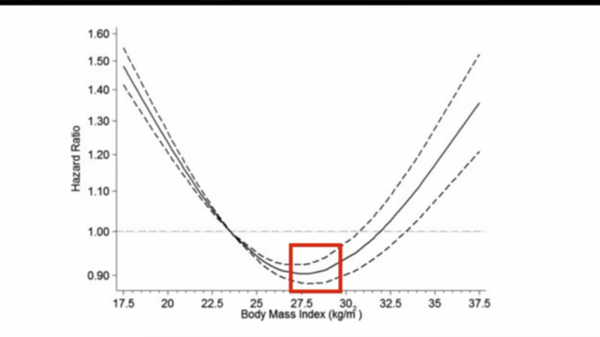
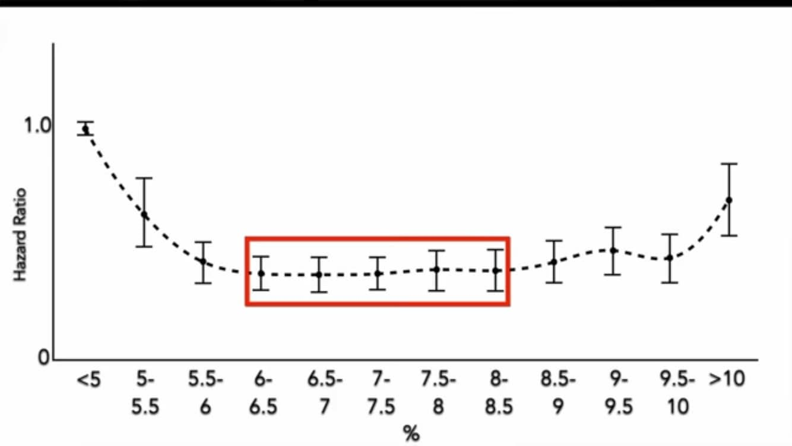
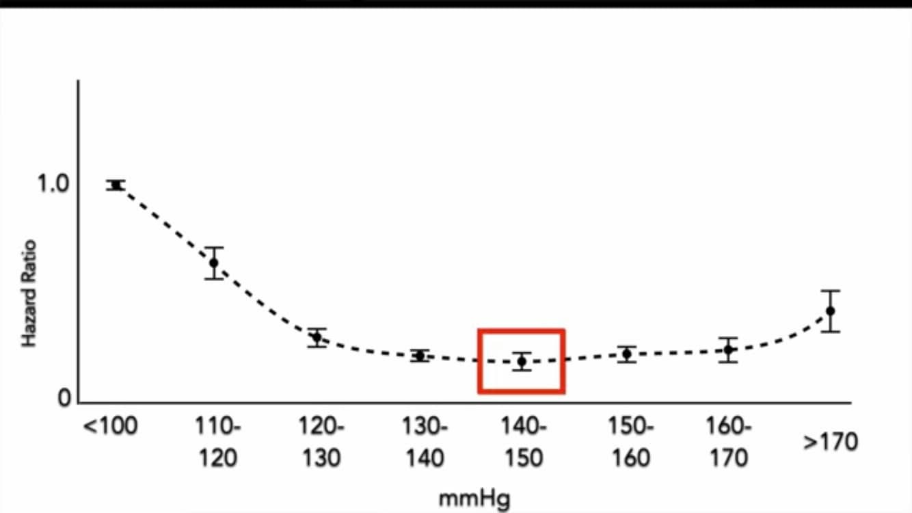

Not a day goes by that some low carb health influencer doesn’t try to claim that low LDL increases your risk of dying.
What they don’t tell you is that these same U-shaped curves show up with lots of health parameters, not just LDL.
It’s funny how they never claim that lower A1C, lower blood pressure, or lower BMI also increase risk from dying. Because there are well established U-curves for these as well.
All of these U-curves are due to reverse causality and similar issues with observational studies.
There are now dozens of randomized controlled trials and mendellian randomization studies that show lower LDL causes lower risk of dying.
facebook.com/share/p/XGjyTGsS8g97ww2L
U-shaped curves happen with lots of health-related parameters, not just cholesterol.
This is a very common phenomenon in epidemiology.
You see it with cholesterol, BMI, A1C, blood pressure, just to name a few.
Don’t be fooled by this. The consensus explanation is reverse causality.
Do you really think the optimal BMI is 28, per observational studies? That the optimal A1C is 6 to 8.5, per observational studies? That the optimal systolic blood pressure is 140 to 150, per observational studies?
Of course not.
These look optimal in observational studies because of reverse causality.
For the same reason, the optimal total cholesterol is not 220 to 240.
The charts in the photos below show hazard ratio (risk of dying) for various values of total cholesterol, BMI, A1C, and blood pressure. All of these charts come from observational studies.
The reference for these particular U-shaped charts is this video. They are explained in more detail in the video:
↪ Video: cholesterol and risk of death, new evidence
Note: Reverse causality means that increased risk of dying (e.g. illness) causes the parameter in question to go down. As opposed to the other way around. For example, cancer is well known to cause lower LDL and BMI. Liver or kidney diseases cause lower A1C. Uncontrolled diabetes causes lower blood pressure.
#ushapedcurveHD #ldlHD #a1cHD #bmiHD #bloodpressureHD #reversecausalityHD #cholesterolHD #lowldlHD



